사회조사분석사-2급 (2009-07-26 기출문제)
1과목: 조사방법론 I
1. 문헌연구법의 장점이 아닌 것은?
- 여러사회의 횡단연구 가능
- 대규모 표본 연구
- 제보의 자발성 보장
- 무반응성
(정답률: 45%)

2. 경험적 연구방법에 대한 설명으로 틀린 것은?
- 실험은 다른 변수들의 영향을 배제할 수 있다는 장점을 가지고 있다.
- 참여관찰의 결과는 일반화의 가능성이 높다.
- 조사연구는 대규모의 모집단의 특성을 기술하는데 유용하다.
- 내용분석은 기록된 자료만 다룰 수 있다는 제약을 가지고 있다.
(정답률: 61%)
3. 분석단위의 혼란에서 오는 오류 중 개인의 특성에 관한 자료로부터 집단의 특성을 도출할 경우 발생하기 쉬운 오류는?
- 생태학적 오류
- 개인주의적 오류
- 비표본 오차
- 체계적 오류
(정답률: 71%)
4. 다음 중 집단조사의 특징과 가장 거리가 먼 것은?
- 집단조사는 집단의 속한 조직을 연구하는 데에만 사용할 수 있다.
- 집단으로 조사되므로 주변사람이 응답자에 영향을 미칠 가능성이 높다.
- 일반적으로 집단조사를 승인한 조직체나 단체에 유리한 쪽으로 응답할 가능성이 높다.
- 집단이 속한 조직으로부터 적절한 협조가 있으면, 비용과 시간을 절약할 수 있는 조사기법이다.
(정답률: 74%)
5. 다음 중 투표와 관련되 정치여론조사를 신속하게 해야 될 경우에 가장 적합한 자료수집방법은?
- 면접조사
- 전화조사
- 우편조사
- 집단조사
(정답률: 83%)
6. 다음 중 특정 연구에 대한 사전 지식이 부족할 때 예비조사 또는 사전조사(pre-test)에서 사용하기에 가장 적절한 질문유형은?
- 개방형 질문
- 폐쇄형 질문
- 가치중립적 질문
- 유도성 질문
(정답률: 86%)
7. 다음 자료수집방법 중 조사자가 미완성의 문장을 제시하면 응답자가 이 문장을 완성시키는 방법은?
- 투사법
- 면접법
- 관찰법
- 내용분석법
(정답률: 75%)
8. 두변수간의 사실적인 관계를 약화시키거나 소멸시켜 버리는 검정 변수는?
- 선행변수(antecedent variable)
- 매개변수(intervering variable)
- 억제변수(suppressor variable)
- 왜곡변수(distorter variable)
(정답률: 77%)
9. 경험적 검정을 위한 작업가설이 갖추어야 할 요건으로 틀린 것은?
- 명료하여야 한다.
- 가치중립적이어야 한다.
- 일반화되어 있어야 한다.
- 경험적으로 검정 가능한 것이어야 한다.
(정답률: 75%)
10. 다음 중 질문지의 개별문항으로 가장 적합한 것은?
- 당신의 월수입은 얼마나 됩니까?
- 당신은 X-ray 검진을 받은 적이 있습니까?
- 당신은 극장에 가끔 가십니까 아니면 규칙적으로 가십니까?
- 당신은 당신 회사의 구내식당에 대해 만족합니까 아니면 불만입니까?
(정답률: 77%)
11. 다음 중 가급적 적은 수의 변수로 보다 많은 현상을 설명하고자 하는 것은?
- 관료제의 철칙(iron law of bureaucracy)
- 배제성의 원칙(principle of exclusiveness)
- 포관성의 원칙(principle of exhaustiveness)
- 간결성의 원칙(principle of parsimony)
(정답률: 63%)
12. 이론으로부터 가설을 도출한 후 경험적 관찰을 통하여 이론을 검증하는 탐구방식은 무엇인가?
- 귀납적 방법
- 연역적 방법
- 기술적 연구
- 분석적 연구
(정답률: 76%)
13. 다음 중 폐쇄형 질문의 특성이 아닌 것은?
- 응답자에게 창의적인 자기표현의 기회를 줄 수 있다.
- 질문에 대한 대답이 표준화되어 있기 때문에 비교가 가능하다.
- 밝히기를 주저하거나 사생활과 관련되는 민감한 주제에 적합하다.
- 부호화(coding)와 분석이 용이하여 시간과 경비를 절약할 수 있다.
(정답률: 75%)
14. 우편조사와 비교했을 때, 면접조사가 가지는 장점이 아닌 것은?
- 응답자에게 익명성에 대한 확신을 부여할 수 있다.
- 응답률이 높다.
- 보다 신뢰성 있는 대답을 얻을 수 있다.
- 응답자와 그 주변의 상황들을 직접 관찰할 수 있다.
(정답률: 80%)
15. 질문지를 작성할 때의 설문의 순서에 관한 설명으로 적합하지 않은 것은?
- 첫 번째 질문은 가능한 한 쉽게 응답할 수 있고 흥미를 유발 할 수 있는 것이 좋다.
- 응답자의 연령이나 소득과 같이 개인적인 질문은 뒷부분에서 하는 것이 좋다.
- 산업관련 질문들을 나열할 때 특정품목에 대한 문항을 묻고, 산업 전체에 관련된 문항을 배열하는 것이 좋다.
- 질문 간에 연상작용을 일으켜 다음 응답에 영향을 미칠 경우에는 이러한 질문들 사이의 간격을 멀리 떨어뜨리는 것이 좋다.
(정답률: 75%)
16. 응답자들이 일반적으로 응답을 꺼리는 위협적인 질문을 처리하는 방법에 대한 설명으로 틀린 것은?
- 질문배열의 순서를 조정한다.
- 질문을 솔직하게 표현한다.
- 솔직한 응답의 필요성을 강조한다.
- 비밀과 익명성의 보장을 강조한다.
(정답률: 68%)
17. 기업들이 신입사원의 채용에 있어 성차별을 하는지에 관한 실태 조사를 실시하려 한다. 이러한 사회조사의 연구초점은 다음 중 어느 것에 가장 적당한가?
- 특성(characteristcs)
- 성향(orientations)
- 관계(relations)
- 행위(actions)
(정답률: 46%)
18. 다음 중 과학적인 사회조사방법이 갖추어야 할 특성과 가장 거리가 먼 것은?
- 과학적 사회조사 상호주관적이어야 한다.
- 과학적 사회조사는 절제된 논리적 설명을 요구한다.
- 과학적 사회조사는 연구대상에 대한 일반화된 설명을 목표로 한다.
- 과학적 사회조사는 비결정론적인 인과관계에 의거해 설명하여야 한다.
(정답률: 47%)
19. 우편조사의 장점이 아닌 것은?
- 면접조사에 비해 비용이 적게 든다
- 접근하기 어려운 사람에게도 조사가 가능하다.
- 광범위한 지역에 걸쳐서 조사가 가능하다.
- 응답자 본인의 응답인지를 확인할 수 있다.
(정답률: 83%)
20. 다음 중 온라인 조사에서 일반적으로 가장 간단하고 빠른 방법은?
- 전자우편조사(e-mail survey)
- 웹조사(HTML form survey)
- 컴퓨터 보조 전화면접(CATI)
- 다운로드 조사(downloadable survey)
(정답률: 64%)
21. 설문지의 표지문(cover letter)에 포함될 내용으로 적합하지 않은 것은?
- 연구의 목적
- 연구의 중요성
- 연구의 예상결과
- 연구의 주관기관
(정답률: 82%)
22. 다음 ( )안에 들어갈 알맞은 것은?
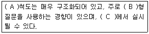
- A : 양적, B : 폐쇄, C : 면접이나 설문지 형식
- A : 양적, B : 개방, C : 면접
- A : 질적, B : 개방, C : 심층면접
- A : 질적, B : 폐쇄, C : 면접
(정답률: 82%)
23. 다음 질문은 어떤 접에서 문제가 있는가?
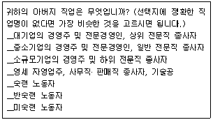
- 간결성
- 명확성
- 단순성
- 가치중립성
(정답률: 72%)
24. 면접조사에서 면접원의 역할수행시 주의사항과 가장 거리가 먼 것은?
- 면접자의 복장은 깨끗하고 응답자가 이질감을 느끼지 않도록 해야 한다.
- 개방형 질문의 경우 응답자의 응답을 요약하거나 재해석하여 기록한다.
- 설문지를 충분히 숙달하도록 하여 설문안내를 매끄럽게 하도록 한다.
- 특정질문에 대한 심층규명은 중립적이어야 한다.
(정답률: 78%)
25. 일반적인 질문지 작성 원칙과 가장 거리가 먼 것은?
- 질문 문항은 명료하고 적절한 언어를 사용하여야 한다.
- 사회적으로 바람직한 응답이 도출될 수 있도록 하여야 한다.
- 이중적으로 해석될 수 있는 질문을 피하도록 한다.
- 설문 문장은 완전한 문장을 사용하는 것이 바람직하다.
(정답률: 72%)
26. 다음은 무엇에 관한 설명인가?
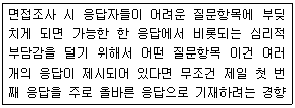
- 후광효과(halo effect)
- 1차정보효과(primacy effect)
- 동조효과(acquiescence effect)
- 최근정보효과(recency effect)
(정답률: 68%)
27. 다음 중 조작적 정의의 의미로 가장 적합한 것은?
- 변수가 항상 동일한 측정치를 낼 것인가를 미리 살펴보는 것이다.
- 변수가 측정하고자 하는 것을 측정하고 있는지를 밝혀 보는 것이다.
- 연구 또는 연구가설에 포함된 변수들이 구체적으로 어떻게 측정될 것인가를 서술하는 것이다.
- 다른 연구에서 사용된 개념을 현재 연구에서 사용하기 위해 조작하여 다시 정의하는 것이다.
(정답률: 46%)
28. 사회조사에서 생태학적 오류(ecological fallacy)란?
- 주변환경에 대한 주요 정보를 누락시키는 오류
- 연구에서 사회조직의 활동결과인 사회적 산물들을 누락 시키는 오류
- 집단이나 집합체에 관한 성격을 바탕으로 개인들에 대한 성격을 규정하게 되는 연구분석단위의 혼란
- 사회조사설계 과정에서 문제를 중심으로 관련되 여러 체계들 간의 상호작용 가능성에 대한 고려를 누락시키는 오류
(정답률: 65%)
29. 다음 중 질문지 작성방법에 관한 설명으로 가장 적합한 것은?
- 질문지는 한번 실시되면 돌이킬 수 없으므로 가능한 많은 양의 정보가 실릴 수 있도록 작성한다.
- 필요한 정보의 종류, 측정방법, 분석할 내용, 분석의 기법까지 모두 미리 고려된 상황에서 질문지를 작성한다
- 질문지 작성에는 일정한 원리와 이론이 적용되는 것이므로 이에 대한 내용을 숙지한 후 상당한 시간과 노력을 들여 신중하게 작성한다.
- 동일한 양의 정보를 담고 있어도 설문지의 분량은 가급적 적어야 하기 때문에, 필요한 정보의 획득을 위한 질문문항 외에 다른 요소들은 설문지에 포함시키지 않아야 한다.
(정답률: 46%)
30. 다음 중 귀납법에 관한 설명으로 틀린 것은?
- 귀납적 논리의 마지막 단계에서는 가설과 관찰결과를 비교하게 된다.
- 경험의 세계에서 관찰된 많은 사실들이 공통적인 유형으로 전개되는 것을 발견하고 이들의 유형을 객관적인 수준에서 증명하는 것이다.
- 특수한(specific) 사실을 전제로 하여 일반적(general) 진리 또는 원리로서의 결론을 내리는 방법이다.
- 관찰된 사실 중에서 공통적인 유형을 객관적으로 증명하기 위하여 통계적 분석이 요구된다.
(정답률: 72%)
2과목: 조사방법론 II
31. 다음 ( )안에 들어갈 알맞은 것은?
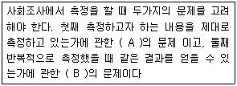
- A : 타당성 B : 신뢰성
- A : 신뢰성 B : 타당성
- A : 신뢰성 B : 동일성
- A : 동일성 B : 타당성
(정답률: 59%)
32. 등간척도의 성격을 모두 가지고 있으면서 동시에 실제적인 의미가 있느 절대영(absolute zero) 혹은 자연적인 영(natural zero)을 갖춘 척도는?
- 비율척도
- 서열척도
- 명목척도
- 독립척도
(정답률: 77%)
33. 다음 ( )안에 들어갈 알맞은 것은?
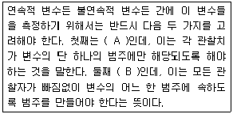
- A : 포괄성 B : 상호배타성
- A : 독립성 B : 상호배타성
- A : 상호배타성 B : 포괄성
- A : 상호배타성 B : 독립성
(정답률: 53%)
34. 신뢰도 측정방법 중 크론바하 알파(Cronbach s Alpha)에 관한 설명으로 옳은 것은?
- 한 척도에 여러 개의 크론바하 알파 값이 있다.
- 문항 수가 적을수록 크론바하 알파 값이 커진다.
- 각 문항들이 서로 상관관계가 없다는 논리에 근거하고 있다.
- 신뢰도가 낮을 경우 신뢰돌르 낮게 하는 문항을 찾아낼 수 있다.
(정답률: 55%)
35. 확률표집의 논리를 적용하면서, 필요에 따라 표집률을 달리하는 표집방법은?
- 층화확률표집
- 계통확률표집
- 집락확률표집
- 가중확률표집
(정답률: 61%)
36. 전수조사 대신 표본조사를 하는 이유와 가장 거리가 먼 것은?
- 경비를 절감하기 위해
- 정확도를 높이기 위해
- 표본오차를 줄이기 위해
- 광범위한 주제에 걸쳐서 연구하기 위해
(정답률: 54%)
37. 리커트척도의 신뢰성을 검증하는 방법으로 틀린 것은?
- 총점이 정규분포를 이루는가 살펴본다.
- 각 항목의 점수와 총점의 상관계수를 산출한다.
- 크론바하 알파값을 산출하여 문항들의 내적일관성을 검증한다.
- 전체문항을 두 개의 조로 나눈 다음 각 조 간의 상관계수를 산출한다.
(정답률: 38%)
38. 척도를 구성하는 과정에서 질문 문항들이 단일차원을 이루는 지를 검증할 수 잇는 척도는?
- 서스톤척도
- 리커트척도
- 거트만척도
- 의미분화척도
(정답률: 44%)
39. 표집오차(sampling error)에 대한 설명으로 틀린 것은?
- 표본의 분산이 작을수록 표집오차는 작아진다.
- 표본의 크기가 클수록 표집오차는 작아진다.
- 표집오차란 통계량들이 모수 주위에 분산되어 잇는 정도롤 말한다.
- 집락표집에서는 표본의 크기가 같을 때 단순무작위 표집에서 보다 표집오차가 작아진다.
(정답률: 54%)
40. 측정의 수준에 따라 4가지 종류의 척도로 구분할 때, 가장 적은 정보를 갖는 척도부터 가장 많은 정보를 갖는 척도를 그 순서대로 나열한 것은?
- 명목척도 < 비율척도 < 등간척도 < 서열척도
- 서열척도 < 명목척도 < 등간척도 < 비율척도
- 명목척도 < 서열척도 < 등간척도 < 비율척도
- 명목척도 < 서열척도 < 비율척도 < 등간척도
(정답률: 73%)
41. 다음 중 확률표본추출방법이 아닌 것은?
- 단순무작위표집(simple random sampling)
- 집락표집(cluster sampling)
- 할당표집(quota sampling)
- 계통표집(systematic sampling)
(정답률: 75%)
42. 대학수학능력시험은 대학에서 공부할 수 있는 능력을 측정하기 위해서 치러진다. 따라서 이론적으로 볼 때 대학수학능력시험 점수가 높은 사람은 대학에서도 높은 학점을 받을 것으로 예측할 수 있다. 대학수학능력시험의 타당도를 평가하기 위한 방법으로써 수년간에 걸쳐 학생 개개인의 입학 시 대학수학능력시험점수와 입학 후 첫 학년도 평균학점간의 상관계수를 살펴보았다면 이는 다음 중 어느 것과 가장 밀접한 연관이 있는가?
- 표면타당도(face validity)
- 내용타당도(content validity)
- 동시적타당도(concurrent validity)
- 구성체타당도(construct validity)
(정답률: 40%)
43. 집락표본추출(cluster sampling)에 관한 설명으로 틀린 것은?
- 확률표본추출(probability frame)의 하나로써 표본 오차의 크기를 계산할 수 있다.
- 완전한 표본틀(sampling frame)이 없는 경우에도 사용가능하며, 비교적 비용이 적게 든다는 장점이 있기 때문에 전국 규모의 조사에 많이 사용된다.
- 집락 내에서는 동질성이 크고 집락 간에는 이질성이 크도록 집락을 설정하면, 표본오차(sampling error)와 조사비용을 동시에 줄일 수 이TEk.
- 조사자의 필요에 따라서는 집락을 2개 이상의 단계에서 설정 할 수도 있다.
(정답률: 60%)
44. 동일한 개념을 측정하기 위해 여러 개의 항목을 이용하는 경우 신뢰도를 저해하는 개별항목을 파악하여 삭제함으로써 전체항목들의 신뢰도를 향상하기 위해 쓰이는 방법은?
- 재조사법(test-retest method)
- 반분법(half-split method)
- 복수양식법(multiple forms technique)
- 내적일관성법(internal consistency reliability)
(정답률: 58%)
45. 다음 중 확률표본추출을 적용하기 가장 용이한 자료수집 방법은?
- 실험 방법(experimentation)
- 현지조사(field research)
- 참여 관찰(participant observation)
- 서베이 조사(survey research)
(정답률: 52%)
46. 유사등간기법(the method of equal-appearing intervals)은 어떤 척도에 해당하는가?
- 거트만척도
- 리커트척도
- 서스톤척도
- 의미분화척도
(정답률: 42%)
47. 명목척도 구성을 위한 측정범주들에 대한 기본 원칙이 아닌 것은?
- 배타성
- 포괄성
- 연관성(논리적)
- 선택성
(정답률: 52%)
48. 측정도구의 타당도를 측정하는 방법이 아닌 것은?
- 재조사법
- 내용타당도
- 기준관련타당도
- 구성체타당도
(정답률: 58%)
49. 할당표집(quota sampling)의 장점이 아닌 것은?
- 무작위표집보다 비용이 적게 든다
- 표본오차가 적을 가능성이 높다.
- 신속한 결과를 원할 때 사용 가능하다.
- 각 집단을 적절히 대표하게 하는 층화의 효과가 있다.
(정답률: 40%)
50. 집단구성원 상호간에 존재하는 사회적 거리의 강도를 측정하기 위해 개발된 척도는?
- 보가더스척도
- 소시오메트리
- 서스톤척도
- 리커트척도
(정답률: 55%)
51. 다음 중 인터넷을 활용한 사회조사의 가장 큰 문제점은?
- 자료입력의 오류
- 추정값의 편향
- 표본오차의 증가
- 분석기법적용의 어려움
(정답률: 30%)
52. 척도제작시 요인분석(factor analysis)이 활용되는 경우로 틀린 것은?
- 문항들 간의 관련성 분석
- 척도의 구성요인 확인
- 척도의 신뢰도 계수 산출
- 척도의 단일 차원성에 대한 검증
(정답률: 23%)
53. 다음 중 단순무작위표집법 대신에 집락표집법을 사용하는 가장 중요한 이유는?
- 표본표집을 좀 더 용이하게 하기 위해
- 비표본오차를 줄이기 위해
- 표본오차를 줄이기 위해
- 사전조사비용을 줄이기 위해
(정답률: 35%)
54. 주민등록번호, 도서분류번호, 자동차번호 등과 같은 수치는 어떤 수준의 척도를 의미하는가?
- 명목척도
- 서열척도
- 등간척도
- 비율척도
(정답률: 70%)
55. 어떤 공정으로부터 제품이 생산되어 나오는 경우 일정 시간간격 마다 하나의 표본을 뽑는다거나, 수입품 검사에 있어서 선창이나 창고에서 표본을 뽑게 되면 내부나 밑에서 표본이 뽑혀지는 것이 어렵기 때문에 운송 중에 일정 시간마다 표본을 뽑는다고 하였을 때, 이에 해당되는 표본추출방법은?
- 편의표본추출(convenience sampling)
- 계통표본추출(systematic sampling)
- 층화표본추출(stratified sampling)
- 눈덩이표본추출(snowball sampling)
(정답률: 57%)
56. 척도구성 중 평정척도의 장점이 아닌 것은?
- 만들기 간편하다.
- 시간과 비용이 적게 든다.
- 적용의 범주가 넓다.
- 객관성이 유지될 수 있다.
(정답률: 49%)
57. 다음 중 동시타당도에 관한 설명으로 틀린 것은?
- 어떤 조사에서 사용된 측정도구에 의한 측정값과 같은 시점에서 기준이 되는 값을 비교하여 측정한다
- 조사에서 사용도니 측정도구의 타당성을 계량화하는 장점이 있다.
- 미래를 측정하는데 있어서 현재 사용하고자 하는 측정 도구가 얼마나 잘 예측할 수 있는지를 파악한다.
- 기준이 되는 값을 정할 수 없는 경우에는 타당성을 측정할 수 없다.
(정답률: 56%)
58. 어느 대학교 학생들의 환경보호에 대한 여론을 조사하기 위해 그 대학 내 학생 정원 가운데 각 학년별 학생 수를 고려하여 학년별 표본 크기를 우선 정하고 표본추출을 행하였다면 이는 무슨 방법에 의한 것인가?
- 집락표본추출
- 계통표본추출
- 단순무작위표본추출
- 층화표본추출
(정답률: 62%)
59. 다음 중 척도에 대한 설명으로 틀린 것은?
- 복합적인 자료를 분석하기 위한 단순한 측정치로 요약하기 위해서 척도구성을 한다.
- 연구자는 다양한 문항들이 동일한 차원을 다루는 하나의 척도를 구성하는지 보기 위해 척도법을 사용한다.
- 측정치 또는 축정수준의 오류를 줄이고 그 타당성과 신뢰성을 높이는 하나의 기법이 곧 척도법이다.
- 개별 문항들을 집약하지 않고 모두 지표로 인정함으로써 보다 효율적으로 주언진 형상을 측정할 수 있다.
(정답률: 42%)
60. 다음 중 서열척도로 측정할 수 있는 변수로 구성된 것은?
- 행복감, 교회 참석 정도, 지역사회 참여도
- 종교 유무, 소득, 직무 만족도
- 직업 신분, 인종, 대통력 지지도
- 학력, 연령, 정당 가입여부
(정답률: 58%)
3과목: 사회통계
61. P(A)=0.4, P(B)=0.2, P(B|A)=0.4일 때 P(A|B)는?
- 0.4
- 0.5
- 0.6
- 0.8
(정답률: 38%)
62. 평균이 100, 표준편차가 10인 정규분포에서 110이상일 확률은 어느 것과 같은가?(단, 다음에서 Z는 표준정규분포를 따르는 확률변수이다.)
- P[ Z ≦ -1]
- P[ Z ≦ 1]
- P[ Z ≦ -10]
- P[ Z ≦ 10]
(정답률: 27%)
63. 표본 크기가 30인 경우, 모평균 μ 에 대한 100(1-α )% 신뢰구간 공식으로 옳은 것은? (단, 표본평균은
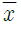
, 표본표준오차는 s 이다.)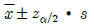
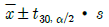
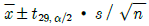
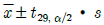
(정답률: 35%)
64. 다음 중 분산도(산포, dispersion)를 나타내는 것은?
- 중앙값
- 표준편차
- 산술평균
- 최빈값
(정답률: 38%)
65. 다음 중 가설검증에 관한 설명을 틀린 것은?
- 연구가설(대립가설)과 귀무가설은 서로 논리적으로 모순된다.
- 실제로 옳은 귀무가설을 가설검증의 결과 부정하는 경우 1종 오류에 빠진다.
- 실제로 옳지 않은 귀무가설을 가설검증의 결과 받아들일 경우 2종 오류에 빠진다.
- 가설검증에서 잘못된 판단을 내릴 확률은 1종 오류와 2종 오류의 확률을 합친 것(α + β)이다.
(정답률: 28%)
66. 미국에서는 인종간의 지적 능력의 근본적 차이를 강조하는 “종모양 곡선(Bell Curve)" 이라는 책이 논란을 불러일으킨 적이 있다. 만약 흑인과 백인의 지증지수의 차이를 비교하고자 할 때 가장 적합한 검정도구는?
- 카이자승 검정
- t-검정
- F-검정
- Z-검정
(정답률: 33%)
67. 다음 중 변수의 측정수준에 따른 집중경향치(중심방향)와 산포도에 관한 설명으로 틀린 것은?
- 명목변수는 집중경향치인 최빈값만 존재하고 그 밖의 기술통계치는 정의되지 않는다.
- 서열변수는 집중경향치 가운데 최빈값과 중앙값이 존재하지만, 산포도는 범위만 존재한다.
- 등간척도는 최빈값과 중앙값, 평균이 모두 존재하며, 산포도 역시 범위, 사분편차, 분산, 표준편차가 존재한다.
- 비율척도는 최빈값과 중앙값, 평균이 모두 존재하며, 산포도 역시 범위, 사분편차, 분산, 표준편차가 존재한다.
(정답률: 14%)
68. 상관분석과 단순선형회귀분석의 관계 중 옳은 것으로만 짝지어진 것은?
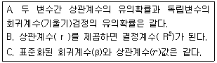
- B
- A, B
- A, C
- A, B, C
(정답률: 12%)
69. 아래 내용에 대한 가설형태로 옳은 것은?
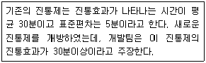
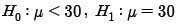
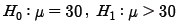
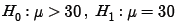
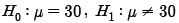
(정답률: 36%)
70. 어떤 동전이 공정한가를 검정하고자 20회를 던져본 결과 15번 앞면이 나왔다. 이 검정에 사용된 카이제곱 통계량(
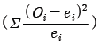
)값은?- 2.5
- 5
- 10
- 12.5
(정답률: 12%)
71. 통계학을 가르치는 교수가 학생들의 점수 분포를 보니 평균(mean)이 40점, 중위값(median)이 38점, 그리고 최빈치(mode)가 36점이었다. 점수가 너무 낮아서 이 교수는 학생들에게 12점의 기본점수를 더해 주기로 하였다. 이 경우 중위값은 얼마나 되는가?
- 40점
- 42점
- 50점
- 52점
(정답률: 37%)
72. 두 변량 중 X를 독립변수, Y를 종속변수로 하여 X와 Y의 Y를 분석하고자 한다. X가 범주형 변수이고, Y가 연속형 변수일 때 가장 적합한 분석방법은?
- 회귀분석
- 교차분석
- 분산분석
- 상관분석
(정답률: 30%)
73. 표준정규분포의 확률계산법칙 중 옳게 표시된 것은?(단, F는 표준정규분포의 누적분포함수이고, Z는 표준정규분포를 가지는 확률 변수이다.)
- P(Z≧a) = F(a), 단, a > 0
- P(Z≧-a) = 1-F(a)
- P(a≦Z≦b) = F(b)-F(a)
- 모두 옳게 표시되었다.
(정답률: 35%)
74. 모평균과 모분산이 알려지지 않은 한 개의 정규모집단에서 모분산에 대한 가설 검정에 사용되는 검정통계량은 무엇인가?
- Z-통계량
- x2-통계량
- t-통계량
- F-통계량
(정답률: 19%)
75. 주사위를 120번 던져서 얻은 결과가 다음과 같다. 주사위가 공정하다는 가정 하에 1× 6 분할표에 대한 x2-통계량 값은?
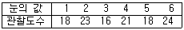
- 0
- 0.125
- 2.0
- 2.5
(정답률: 23%)
76. 다음 X변수의 관찰값에 관한 설명으로 틀린 것은?
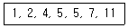
- 범위는 10이다.
- 중앙값은 5.5이다
- 평균값은 5이다.
- 최빈수는 5이다.
(정답률: 36%)
77. 어느 조사기관에서 우리나라 운전자를 대상으로 단순임의추출법(simple random sampling)으로 표본을 추출하여 조사한 결과 40%가 교통사고를 경험한 것으로 발표하였다. 이때 이 결과에 대한 오차의 한계 ± 0.03에서 95%신뢰도를 갖는다고 하였다. 이 경우 표본의 최소 크기는?(단, Z0.025=1.96)
- 968명
- 1068명
- 1168명
- 1268명
(정답률: 35%)
78. 다음 중 최빈수에 관한 설명으로 틀린 것은?
- 최빈수는 관찰값을 의미한다.
- 최빈수는 중심 경향의 측정치이다.
- 최빈수는 1개 이상 존재할 수 있다.
- 최빈수는 계급이 존재하는 경우 보다 쉽게 구할 수 있다.
(정답률: 15%)
79. 분산분석에서의 총 변동은 처리 내에서의 변동과 처리간의 변동으로 구분된다. 그렇다면 각 수준 내에서의 변동의 합을 나타내는 것은?
- 총제곱합
- 처리제곱합
- 급간제곱합
- 잔차제곱합
(정답률: 24%)
80. Awl역, B지역, C지역의 가구당 소독조사를 하여 분석한 결과 다음과 같은 자료를 얻었다. 위 3개 지역의 변이계수를 비교한 결과롤 옳은 것은?
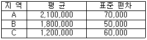
- A지역의 소득이 다른 두 지역에 비해 평균에 밀집되어 있다.
- B지역의 소득이 다른 두 지역에 비해 평균에 가장 밀집되어 있다.
- C지역의 소독이 다른 두 지역에 비해 평균에 가장 밀집 되어 있다.
- 평균이 다르므로 비교할 수 없다.
(정답률: 40%)
81. A 공단 근로자의 월평균 임금을 추정하고자 한다. 95%신뢰수준에서 추정오차가 10만원이내가 되도록 하자면 최소 표본크기를 얼마나 하여야 하는가?(단, 모분산은 2500만원이고 비표본오차는 없다고 가정한다.)
- n=68
- n=79
- n=88
- n=97
(정답률: 22%)
82. 일반적으로 표본의 크기를 증가시키면 모평균에 대한 신뢰구간은 좁아진다. 그 의미는?
- 신뢰구간의 모집단의 평균을 포함할 확신성을 높여준다.
- 표본평균이 모집단 평균의 더 좋은 추정치가 된다.
- 모집단의 모수가 신뢰구간 내에 있을 가능성을 높여준다.
- 표본평균이 모집단의 모수를 정확히 맞출 가능성이 낮아진다.
(정답률: 12%)
83. 다음 설명 중 도수분포표를 작성하는 방법과 관계없는 것은?
- 평균을 계산한다.
- 범위를 계산한다.
- 계급의 수는 분석자가 주관적으로 결정하 수 있다.
- 두수를 산정한다.
(정답률: 17%)
84. 항아리 속에 흰 구슬 2개, 붉은 구슬 3개, 검은 구슬 5개가 들어 있다. 이 항아리 속에서 랜덤하게(임의로) 구슬 3개를 꺼낼 때, 흰 구슬 2개와 검은 구슬 1개가 나올 확률은?
- 1/24
- 9/40
- 3/10
- 1/5
(정답률: 33%)
85. 어느 지역 주민의 3%가 특정 풍토병에 걸려있다고 한다. 이 병에 대한 검진방법에 의하면 감염자의 95%가 (+)반응을, 나머지 5%가 (-)반응을 나타내며 비감염자의 경우는 10%가 (+)반응을, 90%가 (-)반응을 나타낸다고 한다. 지금 주민 중 한사람을 검진한 결과 (+)반응을 보였다면 이 사람이 병에 감염되어 있을 확률에 가장 가까운 값은?
- 0.1⑤
- 0.227
- 0.855
- 0.950
(정답률: 39%)
86. 모표준편차
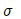
를 모르는 정규모집단에서 n=25개의 표본을 랜덤하게 추출한 결과 표본평균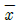
=30이었다. 모평균 μ의 100(1-α)% 신뢰구간은?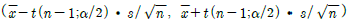
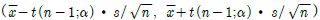
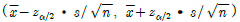
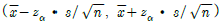
(정답률: 27%)
87. 다음은 독립변수가 개인 경우의 중회귀모형이다. 최소제곱법에 의한 회귀계수 벡터 β의 추정식 b는?
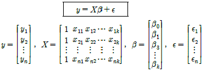
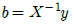
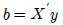
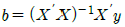
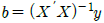
(정답률: 34%)
88. 독립변수가 k개인 경우 중회귀모형
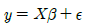
에서 회귀계수 벡터 β의 추정식 b의 분산-공분산 행렬은?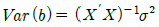
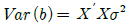
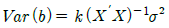
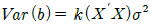
(정답률: 18%)
89. 다음 단순회귀모형에 관한 설명으로 옳은 것은?
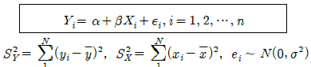
- X와 Y의 표본상관계수를 r 이라 하면 β 의 최소제곱추정량은
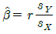
이다. - 모형에서 x/i 와 Yi 를 바꾸어도 β 의 추정량은 같다.
- X가 Y의 변동을 설명하는 정도는 결정계수로 계산되며 Y의 변동이 작아질수록 높아진다.
- 오차항 e1, ..... , en의 분산이 동일하지 않아도 무방하다.
(정답률: 30%)
90. 다음 분산분석표에 관한 설명으로 틀린 것은?
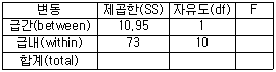
- F통계량은 0.15이다
- 두 개의 집단의 평균을 비교하는 경우이다.
- 관찰치의 총 개수는 12개이다.
- F통계량이 임계값 보다 작으면 집단사이에 평균이 같다는 귀무가설을 기각하지 않는다.
(정답률: 30%)
91. 표본평균과 그의 표준오차에 관한 설명 중에서 틀린 것은?(단, 모집단의 분산  , 표본의 크기 n)
, 표본의 크기 n)
- 표준오차는 모집단의 분산 및 표본의 크기에 영향을 받는다.
- n이 커질 때 표본평균의 분포는 정규분포에 가까워진다.
- 표준오차의 크기는루트 n 에 비례한다.
- 표준오차는 모평균을 추정할 때, 표본평균의 오차에 대하여 설명한다.
(정답률: 28%)
92. 확률변수 Z가 μ = 0,
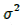
=1인 정규분포에 따를 때 P(-1.93 < Z < 1.645) 의 값은?(단, P(Z<1.96)=0.975, P(Z<1.645)=0.95)- 0.900
- 0.925
- 0.950
- 0.980
(정답률: 30%)
93. 표본크기가 25인 자료에서 표본평균과 표본분산이 각각 75와 100이었다. 평균을 중심으로 최소한 전체 자료의 75%를 포함하는 구간은?(단, 체비셰프 공식을 이용하시오.)
- (55, 95)
- (30, 65)
- (75, 98)
- (50, 1⑤)
(정답률: 23%)
94. 매출액(Y)과 광고액(X)은 직선의 관계에 있으며, 이때 상관계수는 0.90이다. 만일 매출액(Y)을 종속변수 그리고 광고액(X)을 독립변수로 선형 회귀분석을 실시할 경우, 다음 중 추정된 회귀선의 설명력과 가장 가까운 값은?
- 0.99
- 0.91
- 0.81
- 결정할 수 없다.
(정답률: 24%)
95. 특정 질문에 대해 응답자가 답해줄 확률은 0.5이며, 매 질문시 답변 여부는 상호독립적으로 결정된다. 5명에게 질문하였을 경우, 3명이 답해줄 확률과 가장 가까운 값은 얼마인가?
- 0.50
- 0.31
- 0.60
- 결정할 수 없다.
(정답률: 34%)
96. X1, X2, ... Xn 가 정규분포
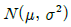
에서 확률표본일 때의 설명으로 옳은 것은?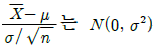
에 따른다.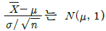
에 따른다.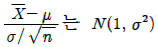
에 따른다.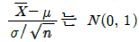
에 따른다.
(정답률: 27%)
97. 에이즈 항체 반응검사에서 에이즈에 걸린 사람들 중에서 95%가 양성 반을을 나타내며 에이즈에 걸리지 않은 사람도 1%의 양성 반을을 나타낸다고 한다. 전 국민 중에서 1%의 사람들이 에이즈에 감염되었다고 할 때 에이즈 반응 검사에서 양성반을을 나타낸 사람이 실제로 에이즈에 걸렸을 확률은?
- 95/194
- 95/195
- 94/194
- 94/195
(정답률: 24%)
98. 평균이 μ 이고 분산이 16인 정규모집단으로부터 크기가 100인 랜덤표본을 얻고 그 표본평균을  라 하자. 귀무가설 H0 : μ =8 과 대립가설 H1 : μ =6.416 의 검정을 위하여 기각역을
라 하자. 귀무가설 H0 : μ =8 과 대립가설 H1 : μ =6.416 의 검정을 위하여 기각역을
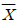
<7.2로 둘 때 제 1종 오류와 2종 오류의 확률은?- 제 1종 오류의 확률 0.⑤, 제 2종 오류의 확률 0.025
- 제 1종 오류의 확률 0.023, 제 2종 오류의 확률 0.025
- 제 1종 오류의 확률 0.023, 제 2종 오류의 확률 0.⑤
- 제 1종 오류의 확률 0.⑤, 제 2종 오류의 확률 0.023
(정답률: 25%)
99. 중회귀분석에서 회귀계수에 대한 검정과 결정계수가 아래와 같을 때의 설명으로 틀린 것은?
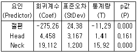
- 설명변수는 Head와 Neck이다.
- 회귀계수 중 가장 의미가 없는 변수는 절편과 Neck이다.
- 위 중회귀모형은 89.1% 자료와 적합한다.
- 회귀방정식에서 다른 요인을 고정시키고 Neck이 한 단위 증가하면 반응값은 19.112가 증가한다.
(정답률: 19%)
100. 피어슨 상관계수에 관한 설명으로 옳음 것은?
- 두 변수가 곡선관계가 되었을 때 기울기를 의미한다.
- 두 변수가 모두 양적변수일 때만 사용한다.
- 상관계수가 음일 경우는 어느 한 변수가 커지면 다른 변수도 커지려는 경향이 있다.
- 단순회귀분석에서 결정계수의 제곱근이 반응변수와 설명변수의 피어슨 상관계수이다.
(정답률: 30%)